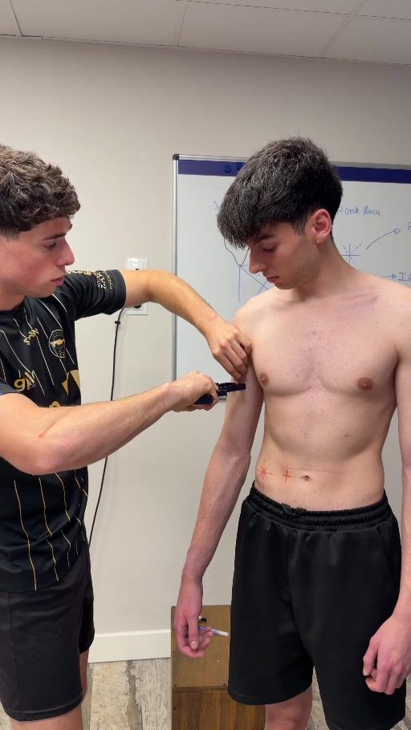
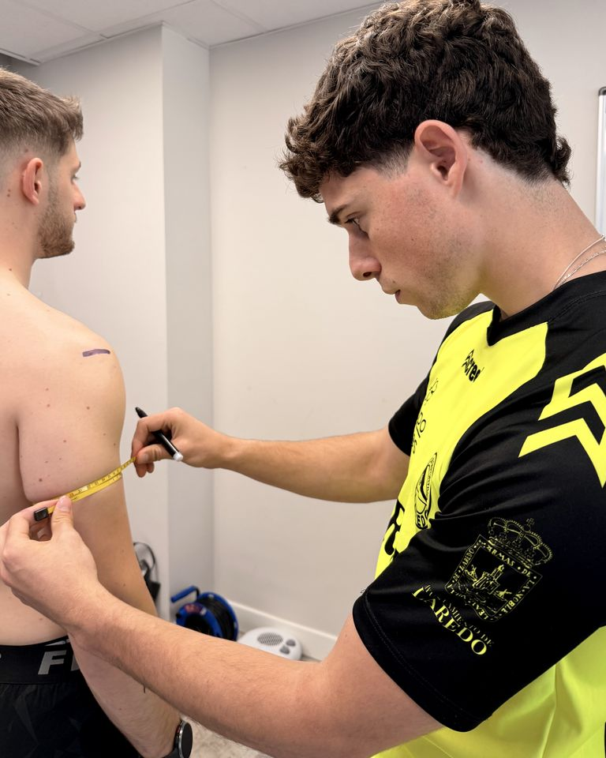
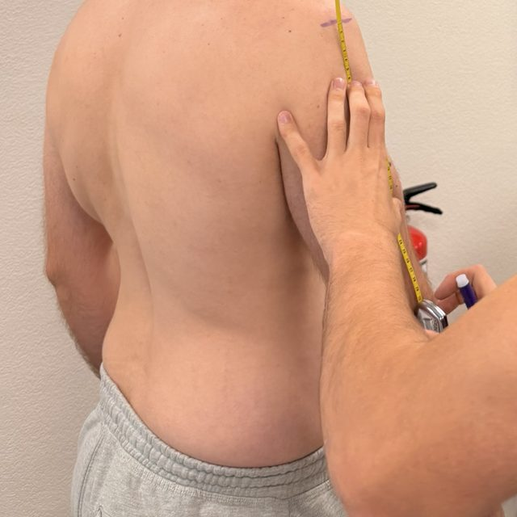
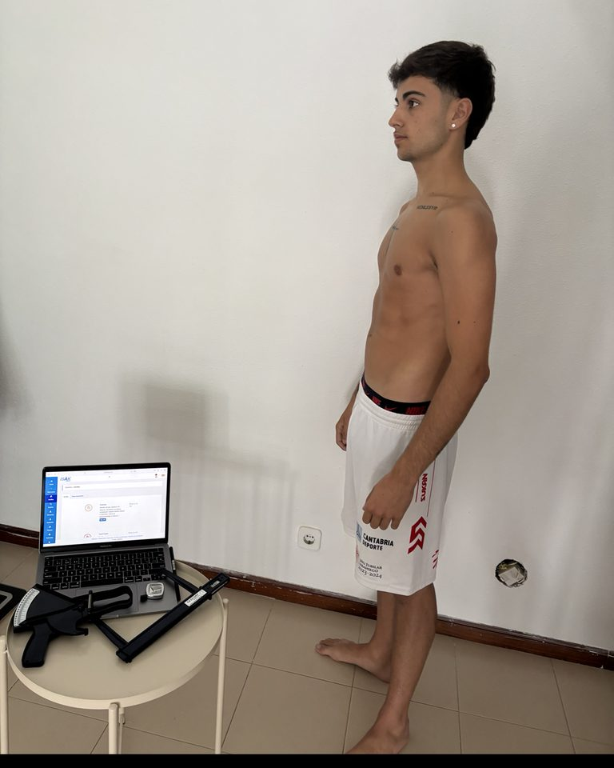
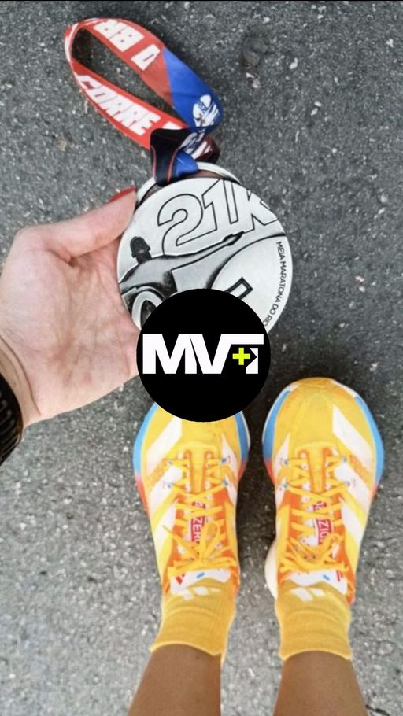
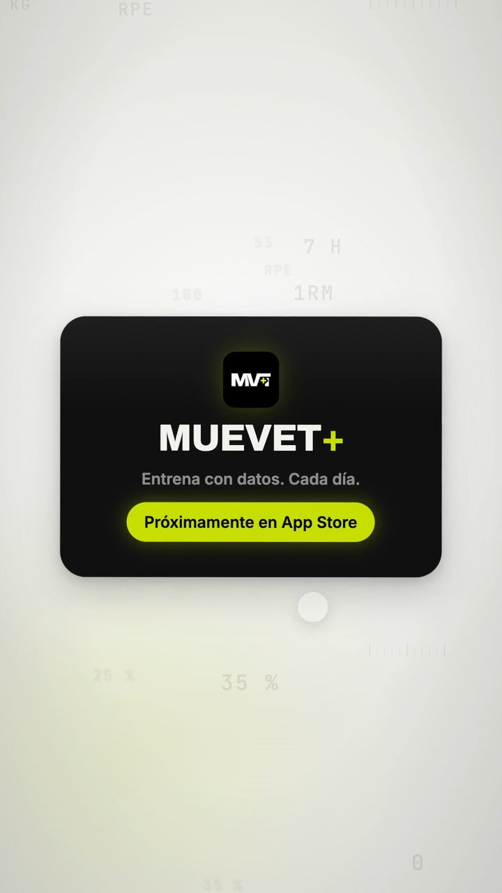

Deja de entrenar a ciegas.
Mide. Analiza. Mejora.
Antropometría ISAK y entrenamiento personalizado. Cantabria y online.
Dos minutos. Te digo por dónde empezar.

Víctor Blanco · Graduado CAFYD · Antropometrista ISAK nivel 1
- Antropometrista ISAK nivel 1
- Graduado en CAFYD
- Presencial en Cantabria · Online
No creemos en entrenar por entrenar. Creemos en entender.
Mido tu composición corporal con el protocolo ISAK y planifico tu entrenamiento con esos datos, con seguimiento semanal. Nada genérico.
Datos reales para decidir mejor. Progreso poco a poco. Y disfrutar del camino — porque de eso va moverse.
De la intuición
a la medida.
Lo que antes era una sensación, ahora es un dato que puedes repetir.
Lunes
Mi entreno
- Peso igual. ¿Mejoro?
- Rutina de un vídeo
DescansoA tope- ¿Grasa o músculo?
- Si me aburro, cambio
- ¿Por dónde empiezo?
Perfil restringido
Protocolo internacional- Pliegues cutáneosPliegues ×8×8Medido
- PerímetrosPerímetros ×5×5Medido
- Diámetros óseosDiámetros ×2×2Medido
- Peso y tallaMedido
- Composición corporal y somatotipoComposiciónInformeIncluido
- Qué significa cada datoExplicaciónEn tu casoIncluido
- Siguiente mediciónRepetibleMismo protocoloRepetible


Mide. Analiza. Mejora.
Antropometría ISAK, presencial en Cantabria.
Antes de entrenar, entiende. Una evaluación con el protocolo internacional ISAK convierte tu punto de partida en datos con los que decidir: qué cambia, cuánto y dónde.
¿Qué mide una evaluación ISAK?
-
Pliegues cutáneos×8
Tríceps, subescapular, bíceps, cresta ilíaca, supraespinal, abdominal, muslo y pierna. Estiman tu grasa subcutánea y, sobre todo, cómo se distribuye. Es el dato que mejor refleja tus cambios reales cuando entrenas y comes bien.
-
Perímetros×5
Brazo relajado y contraído, cintura, cadera y pierna. Hablan de tu masa muscular y de su distribución. Junto a los pliegues, permiten separar qué parte del cambio es músculo y qué parte no.
-
Diámetros óseos×2
Húmero y fémur. Tu estructura no cambia con el entrenamiento, pero condiciona la interpretación de todo lo demás: dos cuerpos con el mismo peso pueden ser completamente distintos.
-
El informe
Con las medidas construyo tu perfil: sumatorio de pliegues, estimación de composición corporal y somatotipo. No es un número suelto: es tu punto de partida medido con un protocolo internacional, repetible en cada seguimiento para ver la evolución de verdad.
- 01Mide.Conoce tu punto de partida
- 02Analiza.Toma mejores decisiones
- 03Mejora.Sigue tu progreso
Protocolo ISAK · Perfil restringido · Antropometrista nivel 1
Empieza con tu valoraciónDos minutos. Te digo por dónde empezar.
Planifica. Entrena. Ajusta.
MUEVET+ COACH: entrenamiento personalizado, presencial en Cantabria y online.
Un plan hecho a partir de tu valoración, no de una plantilla. No te prometo resultados: te prometo criterio y a alguien mirando tu entrenamiento cada semana.

Qué incluye
- 01
Valoración inicial
Empezamos por medir y por hablar: tu composición corporal con el protocolo ISAK, tu contexto, tu tiempo y lo que quieres conseguir.
- 02
Planificación personalizada
Tu plan, construido con esos datos y con tu semana real: los días que tienes, el material que tienes y el punto del que partes.
- 03
Vídeos de ejercicios
Cada ejercicio con su vídeo, para que sepas qué hacer y cómo hacerlo sin dudar en la sala.
- 04
Seguimiento semanal con videollamada
Cada semana nos vemos, repasamos qué ha pasado y ajustamos lo que toque. El plan se mueve contigo.
- 05
Contacto durante el proceso
Si te surge una duda entre sesiones, me escribes. No esperas a la siguiente videollamada.
- 06
La app MUEVET+, incluida Próximamente
La app MUEVET+ para el móvil todavía no está disponible. Cuando lo esté, la tendrás incluida: tus datos, tu plan y tu progreso en el mismo sitio.
Presencial en Cantabria · Online · Seguimiento semanal
Empieza con tu valoraciónDos minutos. Te digo por dónde empezar.

RUN+, el club de running social de MUEVET+
Correr. Conectar. Repetir.
Un club de running social en Cantabria. La carrera es la excusa: lo importante es quién corre a tu lado. Da igual tu ritmo — aquí no se viene a competir, se viene a compartir el movimiento.
Quedadas abiertas a todos los niveles · Se anuncian en Instagram
Únete al grupo de WhatsAppApp MUEVET+
La app MUEVET+, para tu móvil.
Próximamente

La idea es simple: que tu entrenamiento, tus datos y tu progreso vivan en tu móvil, en el mismo sitio y conectados.
- EntrenamientoTu planificación y tus sesiones, registradas con criterio.
- EvaluacionesTus datos ISAK integrados en tu perfil, medición a medición.
- ReadinessCómo llegas hoy, para ajustar lo que toca hoy.
- Hábitos y objetivosEl progreso lento que acaba siendo el importante.
Sin fecha y sin humo: cuando esté lista, lo sabrás aquí y en @muevet.mas.
Todo pasa aquí.
Tu valoración empieza aquí.
No hace falta que lo tengas claro. Cuéntame dónde estás hoy y qué quieres, y te digo por dónde empezar.
- 01Quién eres
- 02Dónde estás
- 03Qué quieres
Recibido
Gracias.
Te escribo con el siguiente paso en cuanto lo lea. Si prefieres adelantarlo, escríbeme por Instagram.
Preguntas frecuentes
¿Qué incluye una evaluación ISAK?
Las mediciones del perfil restringido (8 pliegues, 5 perímetros, 2 diámetros, peso y talla), tu informe de composición corporal y somatotipo, y la explicación de qué significa cada dato en tu caso.
¿Cada cuánto conviene repetirla?
Depende de tu fase y tu objetivo; lo habitual es cada 6-12 semanas, coincidiendo con los ciclos de entrenamiento. Lo importante es que las condiciones de medición sean comparables.
¿Cómo funciona el entrenamiento personalizado?
Con MUEVET+ COACH: empezamos por una valoración inicial (tu composición corporal y tu contexto), construyo tu plan con esos datos, cada ejercicio va con su vídeo, nos vemos cada semana por videollamada para ajustar y, entre sesiones, me escribes. Nada de rutinas genéricas.
¿Dónde estás?
En Cantabria. La evaluación ISAK es presencial; MUEVET+ COACH puede ser presencial u online. Si no estás cerca, escríbeme igualmente y vemos tu caso.
¿Necesito nivel para RUN+?
No. RUN+ es un club social: da igual tu ritmo. Las quedadas se anuncian en Instagram y están abiertas a todos los niveles.
¿Cuándo sale la app MUEVET+?
No doy fecha hasta tenerla. Cuando esté lista, lo sabrás en esta web y en @muevet.mas.
¿Cuánto cuesta?
Depende de lo que necesites: no es lo mismo un análisis que el acompañamiento de COACH. Empieza con tu valoración y te lo cuento sin compromiso.